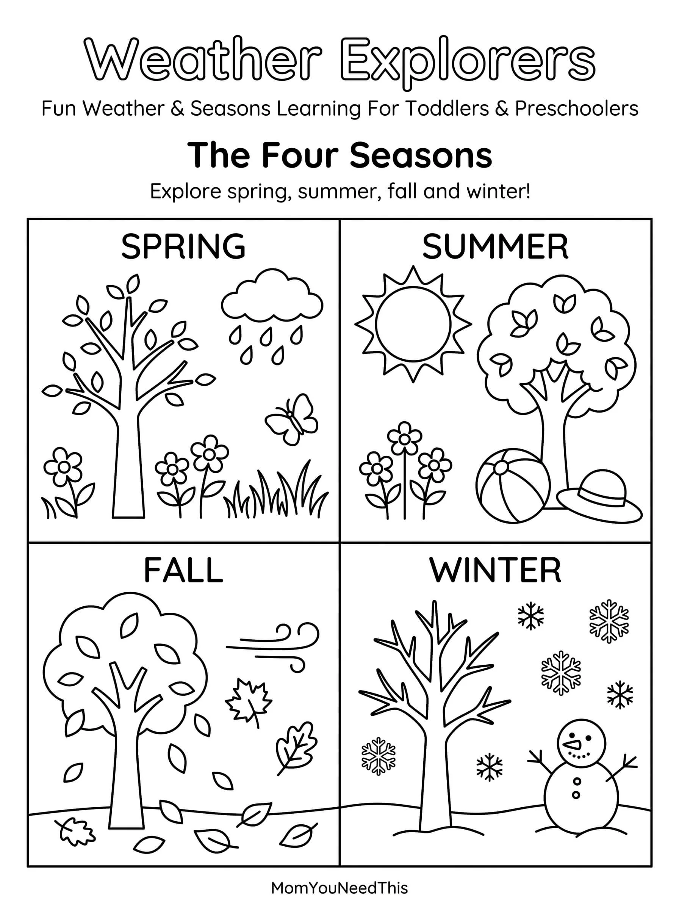

Weather & Seasons Free Printable Weather & Seasons Worksheet For Kids
This free weather seasons worksheet helps toddlers and preschoolers learn the year's great cycle: four seasons, each with its own weather, clothes, plants and games — and the daily weather that varies inside them. Kids talk through which weather belongs to each season and what everyone wears for it, and learn to read the year the way they already read the day: by looking out the window and naming what they see.
The distinction at the heart of the worksheet is one adults blur too: weather is what today is doing; a season is the pattern a few months share. A snowy day in April does not cancel spring — it is weather, visiting a season. Children who grasp that hold the key to every calendar, garden plan and wardrobe argument that follows.
Quick Answer
Weather is what today is doing; a season is the pattern months share — this weather seasons worksheet teaches toddlers and preschoolers that difference. The four seasons sit side by side with their weather, clothes, plants and games, and kids talk about which weather belongs to each season as they go. One free worksheet is ready on this page — no signup.
At a Glance
- Ages: Toddlers and preschoolers
- Activity: Weather vs seasons: a four-seasons comparison worksheet
- Skills: Season knowledge and weather vocabulary
- Format: Printable worksheet (PDF)
- Cost: Free, no signup
☀️ Explore Weather & Seasons
Use the worksheet to help your child recognize different types of weather, learn about the four seasons, and talk about what they see outside every day.
Free Weather Seasons Worksheet

How To Use This Printable
- Download and print the weather and seasons worksheet on letter-size paper.
- Start with today — name today's weather and the season it is visiting, and mark both on the page.
- Work the seasons in order — spring, summer, autumn, winter — saying at each one what changes: the weather, the trees, the clothes, the games.
- Keep the worksheet near the door — a week of morning checks (weather today? still our season?) turns one worksheet into a daily science habit.
Why Learn About Weather & Seasons?
Seasons are a child's first experience of large-scale time: a cycle too big to see in a day, visible only by watching and remembering. Learning them builds the patience of observation — the understanding that the bare tree is not dead but mid-story — alongside a working vocabulary for weather, clothing, plants and holidays.
It also builds prediction, the scientist's core move. A child who knows autumn follows summer can anticipate the leaves, the jackets and the first frost — and a child who watches weather daily learns that forecasts are guesses checked against the sky, theirs to verify every morning.
🍂 The Four Seasons, Side By Side
Spring — the warming. Rain more than snow, buds and first flowers, baby animals, puddles worth engineering. Clothes: layers and rain boots. The season of starting.
Summer — the heat. Long days, short nights, thunderstorms, gardens at full speed, water play. Clothes: the fewest of the year, plus hat and sunscreen. The season of outside.
Autumn (fall) — the cooling. Leaves stop making green and show their hidden colors, then drop; harvests come in; animals cache, migrate or grow winter coats. Clothes: sweaters return. The season of preparing.
Winter — the cold. Short days, bare trees, snow where the climate allows, breath visible in the air. Clothes: the full armor — coat, hat, mittens, boots. The season of resting, for trees and gardens and, traditionally, for everyone's plans.
One globe-sized footnote children love: when it is winter here, it is summer in Australia — the seasons flip on the other half of the Earth, because seasons come from the planet's tilt toward and away from the sun, not from the calendar. December is beach weather somewhere, and that somewhere is a real place with penguins nearby wearing no coats at all — they have their own.
🎁 Keep Exploring Free Learning Activities
Discover more printable activities, toddler resources, and learning ideas created for busy parents.
🎁 View All Free Resources❓ Weather Seasons Worksheet FAQ
Is this weather seasons worksheet printable really free?
Yes — this weather and seasons worksheet is 100% free to download and print at home. No signup and no payment needed. Print a fresh copy each season if you like — coloring the same chart as the year actually turns becomes a year-long record.
What ages is this printable best for?
It is made for toddlers and preschoolers, ages 2–5. Little ones (2–3) sort by today's weather and clothing; older preschoolers (4–5) can hold the whole four-season cycle, order it, and explain what changes at each turn. The morning-check routine works at every age in that range.
What supplies do we need?
Just the printed worksheet plus crayons or markers. A window is the worksheet's answer key, and a thermometer by the door — even a picture one your child “reads” daily — upgrades the morning check into real data collection.
🔗 More Free Printables You’ll Love
- Free Alphabet Coloring Pages Free printable alphabet coloring pages for little learners.
- Free Weather Learning Pages Free printable weather learning pages for little learners.
- Free Letter A Formation Practice Free printable letter a formation practice for little learners.
- Free Letter A Sound Match Free printable letter a sound match for little learners.